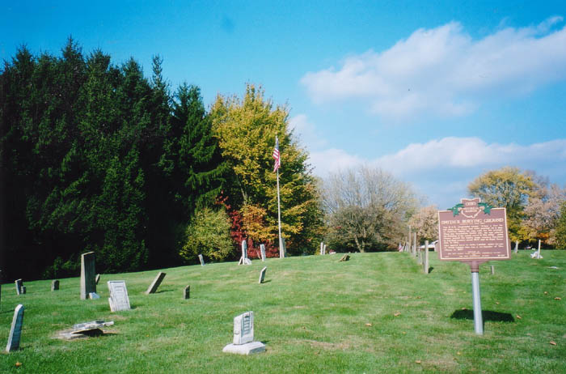
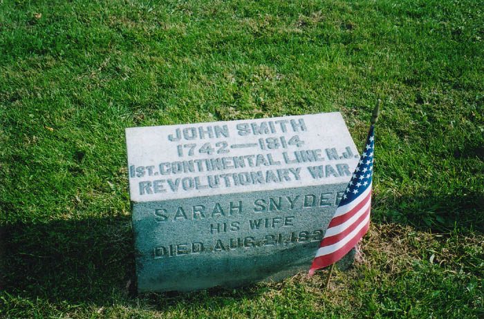
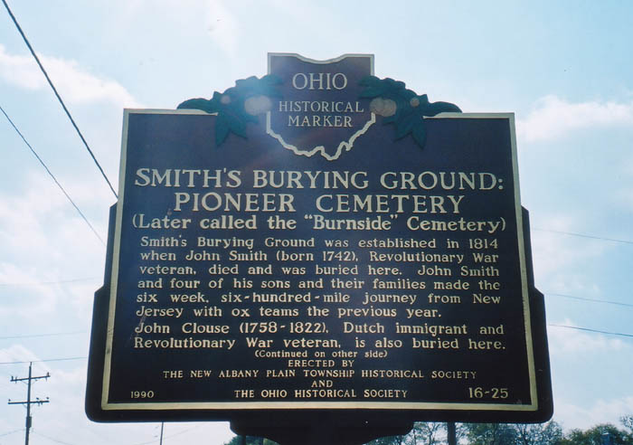
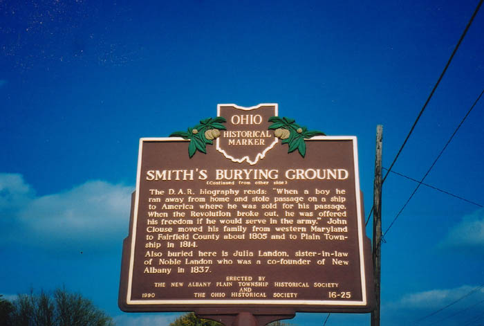
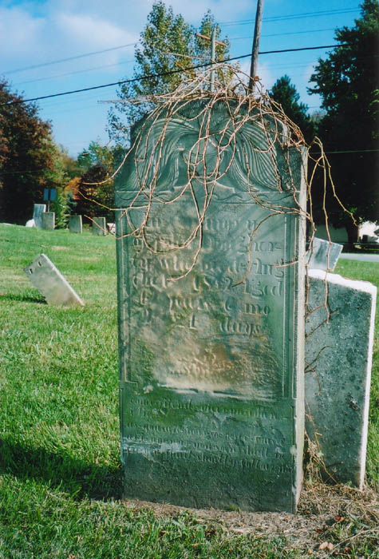

Smith's Burying Ground (aka Burnside Cemetery) near New Albany in Franklin County is a cemetery with a story. Less a "creepy cemetery" than a fascinating one, it is the final resting place of several Revolutionary War soldiers--including its namesake, John Smith, the patriarch of the family which mostly occupies this graveyard along State Route 161. Smith died in 1814 in Ohio after moving west from New Jersey with four of his sons. His replaced marker includes the name of his wife, Sarah Snyder.

John Smith's story is told on an Ohio Historical marker located in the cemetery. The plaque also discusses the life of John Clouse, another Revolutionary War veteran buried here. Click either photo below to read both sides of the plaque.


Katydid and I happened upon this cemetery on our way somewhere else and stopped to snap some photographs. These are all hers, which is why they're so startlingly clear and bright. I plan to steal her camera someday and provide the site with high-quality photographs all the time.

A number of other interesting stones occupy the Smiths' plot, which must be one of the oldest pioneer cemeteries in central Ohio. It's located near the Licking County line on the north side of 161.
Rootsweb: Burnside Cemetery
Back
forgottenohio@yahoo.com